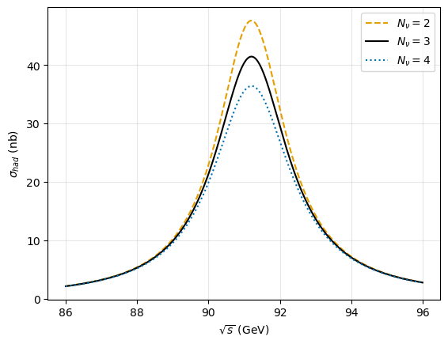
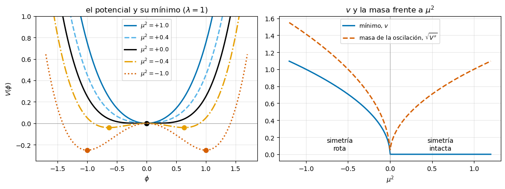

El Modelo Estándar: el vacío no está vacío#
# Configuración: el código auxiliar está en el paquete notebooks/fnyp/
try:
import fnyp
except ModuleNotFoundError: # en Google Colab hay que traerse antes el repositorio
!git clone -q https://github.com/jahernando/USC-FNyP.git
import sys; sys.path.append('USC-FNyP/notebooks')
from fnyp.inicio import *
Last version Thu Oct 8 13:39:21 2026
Objetivos#
El tema tiene cuatro partes:
Las corrientes neutras y el bosón \(Z\). La teoría electrodébil predice un mediador neutro: los neutrinos pueden chocar sin cambiar de identidad. Gargamelle lo ve en 1973; el \(W\) y el \(Z\) aparecen en 1983.
La resonancia del \(Z\). En LEP se produjeron millones de \(Z\). Su forma dice a qué se desintegra, y lo que no se ve cuenta los neutrinos ligeros: tres.
El Higgs: un campo que llena el vacío. La simetría prohíbe las masas. Un campo que en el vacío vale \(v \neq 0\) rompe la simetría sin romper la teoría, y las partículas adquieren masa al interaccionar con él.
El descubrimiento del Higgs. Cómo se desintegra, cómo se buscó y cómo sabemos que es el del Modelo Estándar.
El Modelo Estándar#
El Modelo Estándar (SM) es uno de los grandes logros de la física del siglo XX. Describe con gran precisión todos los resultados de la física de partículas, con una excepción: las oscilaciones de los neutrinos, que piden que tengan masa. Y sabemos que es incompleto: no explica la asimetría entre materia y antimateria del Universo ni la naturaleza de la materia oscura.
Se construye sobre cuatro principios:
incorporar las partículas y las interacciones conocidas y respetar las leyes de conservación observadas, incluida la violación de la paridad en las corrientes cargadas;
ser una teoría cuántica de campos, compatible con la relatividad especial y la mecánica cuántica;
que las interacciones surjan de una simetría gauge local, lo que hace la teoría renormalizable: da predicciones finitas;
que el mecanismo de Higgs dé masa al \(W\), al \(Z\) y a los fermiones sin romper esa simetría.
1. Las corrientes neutras y el bosón \(Z\)#
1.1. Una simetría, cuatro bosones#
En perspectivas (sección 2.4) vimos que la interacción electromagnética no se postula: la impone una simetría, la invariancia bajo un cambio de fase local, y esa simetría trae consigo el fotón.
La teoría electrodébil (Glashow, Weinberg y Salam) hace lo mismo con una simetría mayor, \(SU(2) \times U(1)\):
los fermiones a izquierdas van en dobletes de un espacio interno, el isoespín débil, y los de derechas, solos (singletes): es lo que vimos en leptones, el \(W\) solo ve la mano izquierda. Para la primera familia,
el neutrino solo tiene parte izquierda, y los fermiones, por el momento, no tienen masa: con masa no se pueden separar la parte izquierda y la derecha (volveremos a ello en la tercera parte);
la simetría trae cuatro bosones: el \(W^+\), el \(W^-\), el fotón y un bosón neutro nuevo, el \(Z\).
La teoría tiene solo dos parámetros: la carga \(e\) y el acoplo débil \(g_W\). En su lugar, por razones históricas, se usa el ángulo de Weinberg, \(\theta_W\). Con ellos quedan fijados todos los acoplos:
electromagnético |
débil cargado (\(W\)) |
débil neutro (\(Z\)) |
|---|---|---|
\(e\) |
\(g_W = \dfrac{e}{\sin\theta_W}\) |
\(g_Z = \dfrac{e}{\sin\theta_W\cos\theta_W}\) |
con \(\sin^2\theta_W \simeq 0.231\) [PDG].
[i] Ficha — Los lagrangianos libres
En los temas usamos ecuaciones de movimiento; el Modelo Estándar se escribe con un lagrangiano, \(\mathcal{L}\), del que salen por las ecuaciones de Euler-Lagrange. Para partículas libres hay uno por cada espín:
espín |
campo |
lagrangiano libre |
ecuación |
|---|---|---|---|
\(0\) |
escalar, \(\phi\) |
\(\frac{1}{2}\partial_\mu\phi\,\partial^\mu\phi - \frac{1}{2}m^2\phi^2\) |
Klein-Gordon, \((\partial_\mu\partial^\mu + m^2)\,\phi = 0\) |
\(\frac{1}{2}\) |
fermión, \(\psi\) |
\(\bar\psi\,(i\gamma^\mu\partial_\mu - m)\,\psi\) |
Dirac |
\(1\) |
vector, \(A_\mu\) |
\(-\frac{1}{4}F_{\mu\nu}F^{\mu\nu} + \frac{1}{2}m^2 A_\mu A^\mu\) |
Maxwell si \(m = 0\); Proca si no |
con \(F_{\mu\nu} = \partial_\mu A_\nu - \partial_\nu A_\mu\) (para un escalar complejo, como el Higgs, sin los \(\frac{1}{2}\)). El Modelo Estándar se construye a partir de ellos:
Las interacciones: se cambia \(\partial_\mu \to D_\mu\) en los términos cinéticos, como pide la simetría (esta sección y ext-sm).
El Higgs: un doblete de escalares con su potencial (tercera parte).
Las masas de los fermiones: acoplos con el Higgs (sección 3.2).
Los dos términos de masa, \(\frac{1}{2}m^2 A_\mu A^\mu\) y \(m\bar\psi\psi = m(\bar\psi_L\psi_R + \bar\psi_R\psi_L)\), son justo los que la simetría prohíbe (sección 3.1). [MT, ext-sm]
Los vértices#
fotón: \(Qe\) |
\(W\): \(g_W/\sqrt{2}\), solo a izquierdas, de arriba abajo del doblete |
\(Z\): \(g_Z c_L\) y \(g_Z c_R\) |
El fotón se acopla a la carga, \(Qe\), igual a la izquierda que a la derecha.
El \(W\) conecta los dos miembros de un doblete (\(\nu_e \leftrightarrow e\), \(u \leftrightarrow d\)) y solo a izquierdas: por construcción, viola la paridad de forma máxima. Es el único vértice que cambia el fermión.
El \(Z\) se acopla a la parte izquierda y a la derecha de cada fermión con intensidades distintas, \(g_Z\,c_L\) y \(g_Z\,c_R\), completamente fijadas por el modelo:
con \(Q\) la carga y \(T_3 = +\frac{1}{2}\) arriba del doblete y \(-\frac{1}{2}\) abajo.
fermión |
\(Q\) |
\(T_3\) |
\(c_L\) |
\(c_R\) |
|---|---|---|---|---|
\(\nu_e\) |
\(0\) |
\(+\frac{1}{2}\) |
\(+0.50\) |
\(0\) |
\(e\) |
\(-1\) |
\(-\frac{1}{2}\) |
\(-0.27\) |
\(+0.23\) |
\(u\) |
\(+\frac{2}{3}\) |
\(+\frac{1}{2}\) |
\(+0.35\) |
\(-0.15\) |
\(d\) |
\(-\frac{1}{3}\) |
\(-\frac{1}{2}\) |
\(-0.42\) |
\(+0.08\) |
¿Qué ves?
El \(Z\) también se acopla a los neutrinos, aunque no tengan carga. Solo a su parte izquierda, la única que hay.
A diferencia del \(W\), el \(Z\) ve también la mano derecha de los fermiones cargados, pero con otra intensidad: viola la paridad, aunque no de forma máxima.
Para el electrón, \(|c_L| \simeq |c_R|\): con él, el \(Z\) casi conserva la paridad. Lo veremos en la sección 2.5.
[i] Ficha — De dónde sale el ángulo de Weinberg
La simetría \(SU(2)\) trae tres bosones, \(W^1, W^2, W^3\), con acoplo \(g\), y la \(U(1)\) uno más, \(B\), con acoplo \(g'\). Los \(W^\pm\) son combinaciones de \(W^1\) y \(W^2\). Los dos neutros, \(W^3\) y \(B\), se mezclan: los bosones que se observan son
con \(\tan\theta_W = g'/g\). El fotón, \(A\), es la combinación que no se acopla al neutrino; de ahí sale \(e = g\sin\theta_W\), y \(g = g_W\). El desarrollo completo, con los acoplos del \(Z\) y las masas, en ext-sm, secciones 1–4, y en [MT15].
[+] Mirador — ¿Por qué hace falta el $Z$?
En \(e^+ + e \to W^+ + W^-\) hay tres diagramas: el intercambio de un neutrino, y la aniquilación en un fotón o en un \(Z\). Solo con el neutrino, la sección eficaz crece sin límite con la energía y llega a violar la conservación de la probabilidad (la unitariedad). El fotón no basta para frenarla: hace falta el vértice \(ZWW\), con justo el acoplo que da la teoría.
\(\sigma(e^+ + e \to W^+ + W^-)\) en LEP 2: datos, predicción del Modelo Estándar y sin el vértice \(ZWW\) [MT16] |
LEP 2 lo midió entre \(161\) y \(209\) GeV: los datos siguen la curva del Modelo Estándar. Sin el \(Z\), la sección eficaz ya sería el doble a \(190\) GeV. Las teorías gauge se arreglan solas: los diagramas se cancelan entre sí.
1.2. Hitos#
1961 S. Glashow propone la simetría \(SU(2) \times U(1)\), con un bosón neutro.
1964 F. Englert y R. Brout, P. Higgs, y G. Guralnik, C. Hagen y T. Kibble: el mecanismo de Higgs.
1967–68 S. Weinberg y A. Salam usan ese mecanismo para dar masa al \(W\) y al \(Z\): la teoría electrodébil.
1971 G. “t Hooft y M. Veltman: la teoría es renormalizable, da predicciones finitas.
1973 Gargamelle (CERN) descubre las corrientes neutras.
1983 UA1 y UA2, en el colisionador \(p + \bar{p}\) del CERN, descubren el \(W\) (enero) y el \(Z\) (mayo).
1989 LEP y SLC: tres neutrinos ligeros.
1995 CDF y D0 (Fermilab) descubren el quark top, con la masa que predecía LEP.
2012 ATLAS y CMS (LHC) descubren el bosón de Higgs.
Premios Nobel: Glashow, Salam y Weinberg (1979); C. Rubbia y S. van der Meer (1984); “t Hooft y Veltman (1999); Englert y Higgs (2013).
1.3. Gargamelle: las corrientes neutras#
Si existe el \(Z\), un neutrino puede chocar con un nucleón sin convertirse en su leptón:
con \(X\) los hadrones. Gargamelle era una gran cámara de burbujas de freón, en un campo magnético, en el haz de neutrinos del PS del CERN. Se tomaban fotografías sincronizadas con la llegada del haz.
Antes de seguir, mójate.
¿Cómo distingues en una fotografía una corriente cargada de una neutra?
Los neutrinos del haz chocan también con el blindaje y producen neutrones. ¿Qué aspecto tendría en la cámara un neutrón que choca con un núcleo del freón?
suceso hadrónico de corriente neutra en Gargamelle: un puñado de trazas de hadrones y ningún muón [CERN] |
Lo que vio Gargamelle#
En una corriente cargada sale un muón: una traza larga, poco curvada, que atraviesa la cámara sin interaccionar. En una neutra solo hay hadrones, y ningún muón.
Exactamente igual que una corriente neutra: hadrones sin muón. Era el fondo peligroso. Se descartó estudiando cómo se repartían los sucesos a lo largo de la cámara: los neutrones, que vienen de fuera, interaccionan sobre todo a la entrada; los neutrinos, que apenas interaccionan, por igual en toda ella.
En 1973 Gargamelle encontró unas 0.2 corrientes neutras por cada cargada con neutrinos, y unas \(0.4\) con antineutrinos, del orden de lo que predecía la teoría con \(\sin^2\theta_W \sim 0.3\) [GAR]. Y encontró un suceso aún más limpio, sin hadrones: \(\bar{\nu}_\mu + e \to \bar{\nu}_\mu + e\), un electrón que sale de la nada. Solo el \(Z\) puede producirlo.
Fue la primera confirmación de la teoría electrodébil.
1.4. El \(W\) y el \(Z\)#
Con \(\sin^2\theta_W\) medido en las corrientes neutras, la teoría predice las masas del \(W\) y del \(Z\). La constante de Fermi es el propagador del \(W\) a bajas energías (la perspectiva teórica, sección 2.6), \(G_F/\sqrt{2} = g_W^2/8m_W^2\); con \(g_W = e/\sin\theta_W\):
Salían unos \(80\) y \(90\) GeV, inalcanzables entonces. C. Rubbia propuso convertir el SPS del CERN en un colisionador \(p + \bar{p}\) a \(\sqrt{s} = 540\) GeV, y S. van der Meer inventó cómo concentrar los antiprotones (el enfriamiento estocástico). En 1983, UA1 y UA2 vieron los primeros \(W \to e + \nu\) y \(Z \to e^+ + e\): unas decenas de sucesos, con las masas previstas.
[>] Taller — ¿Dónde buscar el $W$ y el $Z$?
Datos: \(G_F = 1.1664 \cdot 10^{-5}\) GeV\(^{-2}\), \(\alpha = 1/137.04\), y \(\sin^2\theta_W = 0.23\).
Calcula \(m_W\) y \(m_Z\) y compáralos con los valores medidos, \(m_W = 80.37\) GeV y \(m_Z = 91.19\) GeV.
La constante \(\alpha\) crece con la energía (el tema de hadrones): a la escala de \(m_Z\), \(\alpha(m_Z) \simeq 1/128\). Repite el cálculo. ¿Qué te dice el resultado?
En el SPS, \(\sqrt{s} = 540\) GeV. El \(W\) se produce en \(u + \bar{d} \to W^+\). Si el quark y el antiquark llevan la misma fracción \(x\) del momento del protón y del antiprotón, ¿cuánto tiene que valer \(x\)? Recuerda que, en hadrones, los quarks llevaban en total un \(40\,\%\) del momento.
# masas del W y del Z a partir de G_F, alpha y sin^2(theta_W)
GF, s2w = 1.1664e-5, 0.23 # GeV^-2
for nombre, alfa in [('alpha(0) = 1/137', 1/137.04), ('alpha(m_Z) = 1/128', 1/128.)]:
mW = np.sqrt(np.pi * alfa / (np.sqrt(2) * GF)) / np.sqrt(s2w)
mZ = mW / np.sqrt(1 - s2w)
print(f' {nombre}: m_W = {mW:5.1f} GeV, m_Z = {mZ:5.1f} GeV')
print(f' x para producir un W en el SPS: {80.4 / 540:.2f}')
alpha(0) = 1/137: m_W = 77.7 GeV, m_Z = 88.6 GeV
alpha(m_Z) = 1/128: m_W = 80.4 GeV, m_Z = 91.7 GeV
x para producir un W en el SPS: 0.15
Solución
\((\pi\alpha/\sqrt{2}G_F)^{1/2} = 37.3\) GeV, así que \(m_W = 37.3/0.480 = 77.7\) GeV y \(m_Z = 77.7/0.877 = 88.6\) GeV: un \(3\,\%\) por debajo de los medidos.
Con \(\alpha(m_Z)\), \(m_W = 80.5\) GeV y \(m_Z = 91.8\) GeV: casi exactos. La diferencia del apartado 1 son correcciones cuánticas (lazos). La teoría ya no se prueba a orden árbol: con la precisión de LEP hacen falta los lazos, y en ellos entran el top y el Higgs (el mirador de la sección 2.5).
\(\hat{s} = x^2 s = m_W^2\), así que \(x = 80.4/540 = 0.15\). Cada quark lleva en promedio una fracción de ese orden: el \(W\) se produce, pero solo en una parte pequeña de las colisiones. Por eso hacía falta una energía seis veces la masa del \(W\).
1.5. Formulemos algunas preguntas#
Ya sabes que hay un bosón neutro, el \(Z\), que se acopla a todos los fermiones, también a los neutrinos, y que la teoría electrodébil predijo su masa antes de verlo.
Antes de seguir, mójate: ¿qué preguntas te harías sobre el \(Z\), el \(W\) y el origen de las masas? Haz tu lista. A algunas responderemos en este tema; otras no tienen respuesta todavía.
Las que responde el tema, y las que no#
Las que responde este tema:
¿Cuántas familias hay? Tres con neutrino ligero: lo dice la anchura del \(Z\), segunda parte.
Si la simetría trae bosones sin masa, ¿por qué pesan el \(W\) y el \(Z\), y el fotón no? El mecanismo de Higgs, tercera parte.
¿De dónde sale la masa del electrón? ¿Y la del protón? La del electrón, de su acoplo con el Higgs. La del protón, casi toda, no (tercera parte, y el tema de hadrones).
¿Cómo sabemos que la partícula de 2012 es el Higgs? Cuarta parte.
Las que siguen abiertas:
¿Por qué tres familias? Nada en el Modelo Estándar fija el número (lo discutimos en leptones). ¿Qué relación hay, si la hay, entre la mezcla de los quarks (CKM) y la de los neutrinos (PMNS)?
¿Por qué esas masas? Cada fermión tiene su propio acoplo con el Higgs, un parámetro libre. Del electrón al top hay un factor \(300\,000\), y nadie sabe por qué.
¿Cómo adquieren masa los neutrinos? ¿Por qué tan poca? Del mismo modo, haría falta un \(\nu_R\), que no se ha visto. ¿O es el neutrino su propia antipartícula (de Majorana)?
¿Por qué ese potencial? El Higgs funciona con un potencial de forma muy concreta (sección 3.3), pero no hay ningún principio que lo explique.
¿Por qué el Higgs es tan ligero? Las correcciones cuánticas tienden a llevar su masa a la escala más alta que exista. Es el problema de la jerarquía.
¿Hay un solo Higgs? ¿Es elemental? Muchas extensiones del Modelo Estándar tienen varios.
¿Es estable el vacío? Con las masas medidas del Higgs y del top, quizá no del todo (sección 3.5).
¿Hasta qué energía vale el Modelo Estándar? ¿A qué escala aparecerá física nueva?
2. La resonancia del \(Z\)#
2.1. \(e^+ + e \to f + \bar{f}\): el fotón o el \(Z\)#
En la aniquilación \(e^+ + e \to f + \bar{f}\) (con \(f\) un fermión: \(\mu\), \(\tau\), un quark…) el mediador puede ser un fotón o un \(Z\), y los dos diagramas interfieren:
\(e^+ + e \to \mu^+ + \mu\) con un fotón (izda.) o un \(Z\) (dcha.) |
Los propagadores van como \(1/s\) y \(1/(s - m_Z^2)\):
con \(s \ll m_Z^2\), domina el fotón (el tema de hadrones, sección 3.2);
con \(s \simeq m_Z^2\), el propagador del \(Z\) se dispara: domina el \(Z\), una resonancia;
con \(s \gg m_Z^2\), contribuyen los dos.
\(\sigma(e^+ + e \to q + \bar{q})\) frente a \(\sqrt{s}\): datos de muchos experimentos; línea continua, fotón y \(Z\); discontinua, solo fotón [MT16] |
¿Qué ves?
Por debajo de \(\sim 50\) GeV, los datos siguen la curva de solo fotón: caen como \(1/s\).
A \(91\) GeV, un pico: la sección eficaz sube dos órdenes de magnitud. Es el \(Z\) producido en reposo.
Por encima, los datos quedan por encima de la curva del fotón: el \(Z\) sigue contribuyendo.
Sin el \(Z\) no hay manera de explicar los datos.
2.2. La forma de la resonancia#
Entre 1989 y 1995, el colisionador LEP del CERN funcionó a \(\sqrt{s} \simeq m_Z\): sus cuatro experimentos, ALEPH, DELPHI, L3 y OPAL, registraron unos \(17\) millones de \(Z\). Cerca del pico, la sección eficaz es una Breit-Wigner (la introducción, sección 3.4):
donde \(\Gamma_Z\) es la anchura total del \(Z\), y \(\Gamma_{ee}\) y \(\Gamma_{ff}\), las parciales a \(e^+ + e\) y a \(f + \bar{f}\). Tres cosas que leer en ella:
la posición del pico es la masa, \(m_Z\);
la anchura: en \(\sqrt{s} \simeq m_Z \pm \Gamma_Z/2\) la sección eficaz vale la mitad del máximo, así que la anchura a media altura es \(\Gamma_Z\), la suma de todas las anchuras parciales, se vean o no;
la altura del pico,
baja si \(\Gamma_Z\) crece: cada canal más —aunque sea invisible— ensancha el pico y lo hace más bajo.
sección eficaz \(e^+ + e \to\) hadrones medida por OPAL en torno al \(Z\) [OPAL] |
¿Qué ves?
Una docena de energías entre \(88\) y \(94\) GeV, con errores más pequeños que los puntos.
El máximo, a \(\simeq 91.2\) GeV, y la anchura a media altura, de unos \(2.5\) GeV: \(m_Z\) y \(\Gamma_Z\), a simple vista.
El pico no es simétrico: cae más despacio por la derecha. Y vale \(30.5\) nb, cuando la Breit-Wigner da \(41.5\) nb. Los electrones radian fotones antes de chocar: llegan con menos energía y el pico se rebaja y se corre hacia la derecha. Hay que corregirlo, con QED, para extraer \(m_Z\), \(\Gamma_Z\) y \(\sigma^0\).
2.3. ¿A qué se desintegra el \(Z\)?#
La anchura a un par \(f + \bar{f}\) la fija la teoría, con los \(c_L\) y \(c_R\) de la sección 1.1 y \(N_c = 3\) colores para los quarks:
Para un neutrino, \(c_L = \frac{1}{2}\) y \(c_R = 0\):
(\(167.2\) MeV con las correcciones cuánticas). Solo con \(G_F\) y \(m_Z\).
cuatro sucesos de OPAL en el pico del \(Z\), vistos a lo largo del haz. Arriba, en azul, el número de trazas ( |
¿Qué ves? Cada canal tiene su firma:
\(e^+ + e\): dos trazas que se paran en el calorímetro electromagnético, con \(93\) GeV: toda la energía.
\(\mu^+ + \mu\): dos trazas que lo atraviesan todo y llegan a las cámaras de muones (flechas rojas); en los calorímetros apenas dejan \(2\) GeV.
\(\tau^+ + \tau\): dos trazas, pero cada lado distinto: un \(\tau\) da un muón, que llega a las cámaras; el otro, hadrones en los calorímetros. Las trazas suman solo \(37\) GeV: el resto se lo llevan los neutrinos.
\(q + \bar{q}\): \(26\) trazas en dos chorros opuestos, y energía en los dos calorímetros.
Siempre espalda con espalda: el \(Z\) está en reposo. Los \(Z \to \nu + \bar{\nu}\) no dejan nada.
Las medidas de LEP [PDG]:
medido |
medido |
||
|---|---|---|---|
\(m_Z\) |
\(91.1880 \pm 0.0020\) GeV |
\(\Gamma_{\mathrm{had}}\) |
\(1744.4 \pm 2.0\) MeV |
\(\Gamma_Z\) |
\(2495.5 \pm 2.3\) MeV |
\(\Gamma_{\ell\ell}\) (cada leptón) |
\(83.98 \pm 0.09\) MeV |
\(\sigma^0_{\mathrm{had}}\) |
\(41.48 \pm 0.03\) nb |
\(\Gamma_{\mu\mu}/\Gamma_{ee}\), \(\Gamma_{\tau\tau}/\Gamma_{ee}\) |
\(1.000 \pm 0.002\), \(1.002 \pm 0.003\) |
Las tres anchuras leptónicas son iguales: la universalidad de leptones, ahora con el \(Z\).
[>] Taller — Las anchuras del $Z$
Ejecuta la celda: calcula las anchuras parciales del \(Z\) con la fórmula de arriba, \(\sin^2\theta_W = 0.2315\) y una corrección de QCD \((1 + \alpha_S/\pi)\) para los quarks (los quarks radian gluones, como en \(R\) en hadrones).
Compara con las medidas: \(\Gamma_{\ell\ell}\), \(\Gamma_{\mathrm{had}}\) y \(\Gamma_Z\). ¿Con qué precisión acierta la teoría?
¿Qué fracción de los \(Z\) va a hadrones? ¿Y a lo que el detector no ve?
El \(u\) tiene el doble de carga que el \(d\), y sin embargo \(\Gamma_{u\bar{u}} < \Gamma_{d\bar{d}}\). ¿Por qué?
# anchuras parciales del Z en el Modelo Estándar
GF, mZ, s2w, alfaS = 1.1664e-5, 91.188, 0.2315, 0.118 # GeV^-2, GeV
k = np.sqrt(2) * GF * mZ**3 / (6 * np.pi) # GeV
# fermión: (T3, Q, N_c, cuántos sabores accesibles)
fermiones = {'nu': (+0.5, 0., 1, 3), 'l': (-0.5, -1., 1, 3), 'u': (+0.5, 2/3, 3, 2), 'd': (-0.5, -1/3, 3, 3)}
gamma = {}
for f, (T3, Q, Nc, n) in fermiones.items():
cL, cR = T3 - Q * s2w, -Q * s2w or 0.
gamma[f] = k * Nc * (cL**2 + cR**2) * (1 + alfaS / np.pi if Nc == 3 else 1) * 1e3 # MeV
print(f' {f:3s}: c_L = {cL:+.3f}, c_R = {cR:+.3f}, Gamma = {gamma[f]:6.1f} MeV (x {n})')
had = 2 * gamma['u'] + 3 * gamma['d']
tot = had + 3 * gamma['l'] + 3 * gamma['nu']
print(f' Gamma_had = {had:6.1f} MeV (medida 1744.4), Gamma_Z = {tot:6.1f} MeV (medida 2495.5)')
for nombre, g in [('hadrones', had), ('l+l (los tres)', 3 * gamma['l']), ('invisible', 3 * gamma['nu'])]:
print(f' BR({nombre:15s}) = {100 * g / tot:5.1f} %')
nu : c_L = +0.500, c_R = +0.000, Gamma = 165.9 MeV (x 3)
l : c_L = -0.268, c_R = +0.232, Gamma = 83.4 MeV (x 3)
u : c_L = +0.346, c_R = -0.154, Gamma = 296.0 MeV (x 2)
d : c_L = -0.423, c_R = +0.077, Gamma = 381.6 MeV (x 3)
Gamma_had = 1736.7 MeV (medida 1744.4), Gamma_Z = 2484.5 MeV (medida 2495.5)
BR(hadrones ) = 69.9 %
BR(l+l (los tres) ) = 10.1 %
BR(invisible ) = 20.0 %
Solución
\(\Gamma_{\nu\nu} = 165.8\) MeV, \(\Gamma_{\ell\ell} = 83.4\) MeV, \(\Gamma_{u\bar{u}} = 296\) MeV, \(\Gamma_{d\bar{d}} = 382\) MeV.
\(\Gamma_{\ell\ell}\): \(83.4\) frente a \(84.0\) MeV; \(\Gamma_{\mathrm{had}} = 1737\) frente a \(1744\) MeV; \(\Gamma_Z = 2484\) frente a \(2496\) MeV. Un \(0.5\,\%\), con un solo parámetro, \(\sin^2\theta_W\). Lo que falta son, otra vez, correcciones cuánticas, que con la precisión de LEP se ven.
Hadrones, el \(70\,\%\); leptones cargados, el \(10\,\%\) (\(3.4\,\%\) cada uno); invisible, el \(20\,\%\): uno de cada cinco \(Z\) no deja nada en el detector. Medido: \(20.00 \pm 0.06\,\%\).
Porque al \(Z\) no le importa tanto la carga como el isoespín: \(c_L = T_3 - Q\sin^2\theta_W\). Para el \(d\), \(T_3\) y \(-Q\sin^2\theta_W\) tienen el mismo signo y se suman en \(|c_L|\); para el \(u\), se restan. Y hay tres quarks tipo \(d\) accesibles (\(d, s, b\)) y solo dos tipo \(u\) (\(u, c\)): el top pesa demasiado.
2.4. ¿Cuántos neutrinos hay?#
Los neutrinos no se ven, pero cada sabor ligero abre un canal más de desintegración del \(Z\). La anchura total es la suma de las parciales, y la invisible, \(N_\nu\) veces la de un neutrino:
Restando lo que se ve, \(\Gamma_{\mathrm{inv}} = 2495.5 - 3 \times 83.98 - 1744.4 = 499\) MeV, y con \(\Gamma_{\nu\nu} = 167.2\) MeV de la teoría (sección 2.3), \(N_\nu = 2.98\).
\(\sigma(e^+ + e \to\) hadrones\()\) en torno al \(Z\): medidas de ALEPH, DELPHI, L3 y OPAL (errores multiplicados por 10) y predicción con 2, 3 y 4 neutrinos [LEP] |
¿Qué ves? Lejos del pico las tres curvas casi coinciden: la diferencia está en la altura del pico, que baja un \(13\,\%\) por cada neutrino más (sección 2.2). Los datos caen sobre la curva de tres, aun con los errores multiplicados por diez. La altura es la medida más precisa, mejor que la resta; con ella, y con la luminosidad corregida en 2020, \(N_\nu = 2.996 \pm 0.007\) [PDG, JJ].
Hay tres neutrinos ligeros (\(m_\nu < m_Z/2\)) que se acoplan al \(Z\). Una cuarta familia necesitaría un neutrino de más de \(45\) GeV, muy distinto de los otros tres.
[+] Mirador — ¿Faltaba medio neutrino?
El valor que publicó LEP en 2006, \(2.984 \pm 0.008\), quedaba dos desviaciones por debajo de \(3\): ¿faltaba medio neutrino? En 2020, P. Janot y S. Jadach revisaron el cálculo de la luminosidad, la sección eficaz Bhabha (\(e^+ + e \to e^+ + e\)) con la que se normalizan las cuentas, y la discrepancia desapareció. [JJ]
[>] Taller — Cuenta neutrinos con el pico
Con las anchuras medidas de \(\Gamma_{\ell\ell}\) y \(\Gamma_{\mathrm{had}}\), y \(\Gamma_{\nu\nu} = 167.2\) MeV, calcula \(\Gamma_Z\) y la altura del pico, \(\sigma^0_{\mathrm{had}}\), para \(N_\nu = 2\), \(3\) y \(4\). Pasa a nanobarn con \((\hbar c)^2 = 0.3894\) GeV\(^2\) mb.
Ejecuta la celda: dibuja las tres resonancias. Se mide \(\sigma^0_{\mathrm{had}} = 41.48 \pm 0.03\) nb. Despeja \(N_\nu\).
Calcula también el pico de \(e^+ + e \to \mu^+ + \mu\). ¿Cuántas veces más hadrones que muones se producen en el pico? Compáralo con \(R \simeq 3.9\) por debajo del \(Z\) (el tema de hadrones, sección 3.3).
Un cuarto neutrino con \(m > m_Z/2\), ¿cambiaría algo? ¿Qué dice la medida de una cuarta familia?
# altura y forma de la resonancia del Z con N_nu = 2, 3, 4
mZ, Gll, Ghad, Gnn = 91.188, 0.08398, 1.7444, 0.1672 # GeV
GEV2_NB = 0.3894e6 # 1 GeV^-2 = 0.3894 mb = 0.3894e6 nb
def sigma_had(rs, N):
s, GZ = rs**2, 3 * Gll + Ghad + N * Gnn
return 12 * np.pi / mZ**2 * s * Gll * Ghad / ((s - mZ**2)**2 + mZ**2 * GZ**2) * GEV2_NB
rs = np.linspace(86., 96., 400)
for N, ls, c in [(2, '--', '#E69F00'), (3, '-', 'k'), (4, ':', '#0072B2')]: # Okabe-Ito
print(f' N_nu = {N}: Gamma_Z = {1e3 * (3*Gll + Ghad + N*Gnn):6.1f} MeV, sigma0_had = {sigma_had(mZ, N):5.2f} nb')
fn.plot_xy(rs, sigma_had(rs, N), r'$\sqrt{s}$ (GeV)', r'$\sigma_{had}$ (nb)', label=f'$N_\\nu = {N}$', ls=ls, c=c)
# N_nu a partir de la altura medida del pico
GZ = np.sqrt(12 * np.pi / mZ**2 * Gll * Ghad / (41.48 / GEV2_NB))
print(f' pico de mu+ mu: {sigma_had(mZ, 3) * Gll / Ghad:.2f} nb, hadrones / muones = {Ghad / Gll:.1f}')
print(f' con sigma0 = 41.48 nb: Gamma_Z = {1e3 * GZ:6.1f} MeV, N_nu = {(GZ - 3*Gll - Ghad) / Gnn:.3f}')
N_nu = 2: Gamma_Z = 2330.7 MeV, sigma0_had = 47.61 nb
N_nu = 3: Gamma_Z = 2497.9 MeV, sigma0_had = 41.45 nb
N_nu = 4: Gamma_Z = 2665.1 MeV, sigma0_had = 36.41 nb
pico de mu+ mu: 2.00 nb, hadrones / muones = 20.8
con sigma0 = 41.48 nb: Gamma_Z = 2497.0 MeV, N_nu = 2.994

Solución
\(N_\nu = 2\): \(\Gamma_Z = 2331\) MeV, \(\sigma^0 = 47.6\) nb; \(N_\nu = 3\): \(2498\) MeV, \(41.5\) nb; \(N_\nu = 4\): \(2665\) MeV, \(36.4\) nb.
\(\sigma^0 = 41.48\) nb da \(\Gamma_Z = 2497\) MeV y \(N_\nu = 2.99\). El error de \(\sigma^0\), un \(0.08\,\%\), da \(\pm 0.006\) en \(N_\nu\): el análisis completo, con todas las incertidumbres, \(\pm 0.007\).
\(\sigma^0_{\mu\mu} = 2.0\) nb: en el pico hay \(\Gamma_{\mathrm{had}}/\Gamma_{\ell\ell} = 20.8\) veces más hadrones que muones, frente a \(R \simeq 3.9\) con el fotón. El \(Z\) se acopla a los quarks más que el fotón, sobre todo a los de tipo \(d\) (el taller anterior).
No: el \(Z\) no puede desintegrarse en un par de neutrinos de más de \(m_Z/2\) cada uno. Lo que dice LEP es que no hay un cuarto neutrino ligero. Una cuarta familia necesitaría un neutrino de más de \(45\) GeV, muy distinto de los otros tres. Además, un cuarto par de quarks cambiaría la producción del Higgs en el LHC (sección 4.2) en un factor \(\sim 9\), y no se ve: la cuarta familia como las otras tres está descartada.
2.5. El \(Z\) viola la paridad#
Si la interacción conservase la paridad, en \(e^+ + e \to \mu^+ + \mu\) saldrían tantos \(\mu\) hacia delante (en la dirección del \(e\)) como hacia atrás. La asimetría delante-atrás,
sería cero. El fotón conserva la paridad; el \(Z\), no.
\(A_{FB}(e^+ + e \to \mu^+ + \mu)\) de PETRA a LEP 2: JADE, AMY, VENUS, ALEPH y la combinación de LEP 2; la curva es el Modelo Estándar a orden árbol (fotón y \(Z\)). Los puntos de ALEPH por debajo del pico son sucesos en los que el electrón radió un fotón antes de chocar: el par \(\mu^+ + \mu\) se produjo a una energía menor, \(\sqrt{s'}\), la masa del par [HEPData, LEP2] |
¿Qué ves?
Por debajo del \(Z\), \(A_{FB}\) es negativa: \(-0.1\) en PETRA, \(-0.3\) en TRISTAN, y llega a \(\simeq -0.7\) hacia \(80\) GeV. Por encima, positiva: \(\simeq +0.75\) hacia \(110\) GeV y \(\simeq 0.55\) en LEP 2. Es la interferencia entre el fotón y el \(Z\), que cambia de signo al cruzar \(m_Z\), como el propagador \(1/(s - m_Z^2)\). Con solo el fotón, todo estaría en la línea discontinua.
Justo en el pico, \(A_{FB} \simeq 0\) (el recuadro): ahí solo actúa el \(Z\), y con los leptones casi conserva la paridad, porque \(|c_L| \simeq |c_R|\) (la tabla de la sección 1.1).
Treinta años de experimentos, de \(30\) a \(207\) GeV, sobre una curva con un solo parámetro, \(\sin^2\theta_W\).
Que sea casi cero, y no cero, es lo que mide \(\sin^2\theta_W\) con mayor precisión.
[+] Mirador — $A_{FB}$ en el pico mide el ángulo de Weinberg
En el pico del \(Z\), \(A^0_{FB} = \frac{3}{4}\,\mathcal{A}_e\,\mathcal{A}_\mu\), con \(\mathcal{A}_f = (c_L^2 - c_R^2)/(c_L^2 + c_R^2)\) la asimetría entre izquierda y derecha del acoplo. Para un leptón, \(c_L = -\frac{1}{2} + \sin^2\theta_W\) y \(c_R = \sin^2\theta_W\):
\(\sin^2\theta_W\) |
\(0.22\) |
\(0.23\) |
\(0.24\) |
\(0.25\) |
|---|---|---|---|---|
\(\mathcal{A}_\ell\) |
\(0.24\) |
\(0.16\) |
\(0.08\) |
\(0\) |
\(A^0_{FB}\) |
\(0.042\) |
\(0.019\) |
\(0.005\) |
\(0\) |
Un cambio de un \(4\,\%\) en \(\sin^2\theta_W\) cambia \(A^0_{FB}\) en un factor \(4\): por eso es tan sensible. LEP mide \(A^0_{FB} = 0.0171 \pm 0.0010\). Con esta y otras asimetrías (SLC, con electrones polarizados), \(\sin^2\theta_W = 0.2315\) con un error de \(10^{-4}\) [LEP].
[+] Mirador — LEP pesó el top y el Higgs antes de verlos
Con la precisión de LEP, las predicciones necesitan correcciones cuánticas (lazos), y en los lazos del \(W\) y del \(Z\) entran todas las partículas, también las que son demasiado pesadas para producirse. La corrección del top crece como \(m_t^2\); la del Higgs, como \(\ln m_H\).
En 1994, los ajustes electrodébiles daban \(m_t \simeq 170\)–\(180\) GeV. En 1995, CDF y D0 lo descubrieron con \(176\) GeV.
Con el top medido, el Higgs tenía que estar por debajo de unos \(150\)–\(200\) GeV. Está a \(125\) GeV.
Es la misma lógica que llevó a Pauli al neutrino: lo que no se ve, se nota en lo que se ve.
3. El Higgs: un campo que llena el vacío#
3.1. Masas prohibidas#
La simetría que da las interacciones tiene dos consecuencias incómodas (son los términos de masa de la ficha Los lagrangianos libres, en la sección 1.1):
Los bosones no pueden tener masa. Lo vimos con el fotón en perspectivas: un término de masa en su ecuación rompe la simetría. Lo mismo vale para el \(W\) y el \(Z\). Pero pesan \(80\) y \(91\) GeV.
Los fermiones tampoco. La masa mezcla las dos quiralidades: en la ecuación de Dirac, \(i\gamma^\mu\partial_\mu\Psi_L = m\,\Psi_R\) (ext-quiral). Una partícula con masa, vista desde un sistema que la adelante, cambia de helicidad (el tema de leptones). Pero la parte izquierda está en un doblete y la derecha no: la masa conecta dos cosas que la simetría trata de forma distinta.
Antes de seguir, mójate. ¿Renunciamos a la simetría, que nos ha dado el \(Z\), las corrientes neutras y la anchura del \(Z\) al \(0.5\,\%\)? ¿O renunciamos a las masas?
3.2. La masa como interacción#
Ninguna de las dos. Parte de la ecuación de Dirac de un fermión con masa, con la masa a la derecha:
Compárala con la de un electrón en un campo electromagnético (perspectivas, sección 2.4), \(i\gamma^\mu\partial_\mu\Psi = m\Psi + q\,\gamma^\mu A_\mu\Psi\): a la derecha, una constante de acoplo por un campo por \(\Psi\). La masa tiene la misma forma, solo que con un número en lugar de un campo. La idea es sustituir la constante \(m\) por un campo: un campo escalar, \(\phi(x)\), con el que interacciona cada fermión con una intensidad \(y_f\) (un acoplo de Yukawa),
Ahora no hay masa, solo una interacción (el \(\sqrt{2}\) es un convenio). Y la clave: supón que en el vacío el campo no vale cero, sino una constante, \(v\), en todo el espacio. Si se escribe \(\phi(x) = v + h(x)\):
El primer término devuelve la ecuación de Dirac con masa, con \(m_f = y_f v/\sqrt{2}\): la masa es la interacción del fermión con el campo de fondo, que está en todas partes.
El segundo es una interacción con las oscilaciones del campo alrededor de \(v\), \(h(x)\): una partícula nueva, el bosón de Higgs, que se acopla a cada fermión en proporción a su masa.
la masa (izda., el vacío \(v\)) y el acoplo con el bosón de Higgs (dcha., \(h\)) salen del mismo vértice |
el valor del campo en el vacío, \(v\), da la masa a los fermiones, al \(W\) y al \(Z\) |
¿Qué ves?
En el vértice del fermión, entra un \(f_L\) y sale un \(f_R\): el vacío cambia la quiralidad. Como \(\phi\) es un doblete de \(SU(2)\), igual que \(\Psi_L\), la combinación respeta la simetría: es la solución a la pega de la sección 3.1.
El mismo \(v\) da masa al \(W\) y al \(Z\): \(m_W = g_W v/2\) y \(m_Z = m_W/\cos\theta_W\). El cociente \(m_W/m_Z = \cos\theta_W\) es una predicción: \(80.37/91.19 = 0.881\), y \(\cos\theta_W = 0.877\) (la diferencia, otra vez, son lazos).
El fotón no se acopla a \(v\), porque \(v\) no tiene carga eléctrica: sigue sin masa. La simetría electromagnética no se rompe.
3.3. La rotura espontánea de simetría#
¿Por qué iba a valer el campo \(v \neq 0\) en el vacío? El vacío es el estado de mínima energía. Si la energía potencial del campo es
hay dos casos:
\(\mu^2 > 0\): el mínimo está en \(\phi = 0\). El vacío está vacío. Con \(\lambda = 0\) es el campo escalar de siempre, el de Klein-Gordon, con masa \(\mu\).
\(\mu^2 < 0\): \(\phi = 0\) es un máximo, y los mínimos están en \(\phi = \pm v\), con \(v = \sqrt{-\mu^2/\lambda}\).
Antes de seguir, mójate. En el caso \(\mu^2 < 0\), \(V\) es simétrico, \(V(\phi) = V(-\phi)\). ¿Lo es el vacío?
# el potencial para varios mu^2, de positivo a negativo (la cosmética, en fnyp/sm.py)
from fnyp import sm
sm.potencial_higgs();

¿Qué ves? Lo que pasa al bajar \(\mu^2\) de positivo a negativo:
\(\mu^2 > 0\): un cuenco, con el mínimo en \(\phi = 0\). La curvatura en el mínimo es la masa de las oscilaciones, \(m^2 = V''(0) = \mu^2\): un escalar con masa corriente.
\(\mu^2 = 0\): el fondo se aplana (\(V \propto \phi^4\)). La curvatura, y la masa, se anulan. Es la frontera.
\(\mu^2 < 0\): el centro sube y aparecen dos mínimos, \(\pm v\), que se separan como \(\sqrt{-\mu^2}\). La masa vuelve a crecer: \(m^2 = V''(v) = -2\mu^2\).
A la derecha, \(v\) pasa de cero a distinto de cero justo en \(\mu^2 = 0\), sin saltos: es una transición de fase, como la imantación de un hierro al enfriarlo por debajo de la temperatura de Curie.
El vacío elige#
La ecuación es simétrica, pero el vacío tiene que elegir un mínimo, \(+v\) o \(-v\), y al hacerlo rompe la simetría. Es la rotura espontánea de simetría: las leyes tienen una simetría que el estado fundamental no tiene.
No es exótico:
Un imán: las ecuaciones no tienen dirección preferida, pero por debajo de la temperatura de Curie los espines se alinean en una dirección, cualquiera.
Un lápiz de pie sobre la punta: es simétrico, pero inestable; al caer elige una dirección.
El campo de Higgs es complejo (de hecho, un doblete), y el potencial tiene forma de sombrero mexicano:
el potencial de Higgs en función de la parte real y la imaginaria del campo [Wikipedia]; el del taller, con |
¿Qué ves?
El centro, \(\phi = 0\), es simétrico pero inestable: el lápiz de pie.
El fondo es un círculo de mínimos, todos equivalentes. El vacío está en uno de ellos.
Moverse por el fondo no cuesta energía: esas oscilaciones no tienen masa (son los bosones de Goldstone, el mirador).
Moverse hacia arriba, en la dirección radial, sí: la curvatura del potencial es la masa de esa oscilación, \(h\). Es el bosón de Higgs, con
El potencial tiene dos parámetros, \(\mu^2\) y \(\lambda\), o, lo que es lo mismo, \(v\) y \(m_H\). Un campo escalar complejo con un potencial en forma de sombrero mexicano nos da un valor en el vacío con el que dar masa a fermiones y bosones. Pero no hay ningún principio que explique por qué este potencial: ¡otro gran misterio!
[>] Taller — Del cuenco al sombrero
Ejecuta la celda y mueve el deslizador de \(\mu^2 = +1\) a \(-1\) (si no tienes
ipywidgets, llama asm.sombrero(mu2)con varios valores). ¿En qué valor aparece el círculo de mínimos? ¿Dónde queda el vacío?Deriva \(V(\phi)\): obtén el mínimo, \(v\), y la curvatura en él, \(V''(v)\), para \(\mu^2 > 0\) y para \(\mu^2 < 0\). Compáralo con la figura de la derecha. ¿Qué masa tiene la oscilación en \(\mu^2 = 0\)?
Con \(v = 246\) GeV y \(m_H = 125.2\) GeV, ¿cuánto valen \(\lambda\) y \(\mu^2\)?
# del cuenco al sombrero: un deslizador para mu^2 (en el Book no se mueve)
sm.potencial_interactivo()
Hace falta ipywidgets: pip install ipywidgets. Mientras, usa sombrero(mu2) con varios valores.
Solución
El centro deja de ser un mínimo en cuanto \(\mu^2 < 0\): para cualquier valor negativo, por pequeño que sea, aparece el círculo, cada vez más ancho. El vacío está en un punto del círculo: el campo elige uno.
\(V'(\phi) = \phi\,(\mu^2 + \lambda\phi^2) = 0\). Con \(\mu^2 > 0\), solo \(\phi = 0\), y \(V''(0) = \mu^2\). Con \(\mu^2 < 0\), \(\phi = 0\) es un máximo (\(V''(0) = \mu^2 < 0\)) y los mínimos están en \(v^2 = -\mu^2/\lambda\), con \(V''(v) = \mu^2 + 3\lambda v^2 = -2\mu^2 = 2\lambda v^2\). En \(\mu^2 = 0\) la masa es cero: la curva de la derecha toca el eje.
\(\lambda = m_H^2/2v^2 = 0.13\) y \(\mu^2 = -m_H^2/2 = -(88.5\ \mathrm{GeV})^2\).
[+] Mirador — El $W$ y el $Z$ se comen tres bosones
El doblete de Higgs tiene cuatro campos reales. Tras la rotura, uno oscila en la dirección radial: el bosón de Higgs. Los otros tres, a lo largo del fondo del sombrero, serían partículas sin masa (bosones de Goldstone). En una teoría gauge no aparecen: se convierten en la tercera polarización del \(W^+\), del \(W^-\) y del \(Z\). Un bosón vectorial sin masa tiene dos polarizaciones (como el fotón); con masa, tres. La cuenta cuadra: \(4 = 3 + 1\).
Por eso a altas energías un \(W\) polarizado longitudinalmente se comporta como un escalar: es una parte del Higgs.
[+] Mirador — El Higgs empezó en un superconductor
Dentro de un superconductor, el campo magnético no penetra más que una distancia corta (el efecto Meissner): el fotón se comporta como si tuviera masa. Los pares de Cooper forman un estado fundamental que rompe la simetría electromagnética. P. Anderson (1962) señaló que ese mecanismo podía dar masa a los bosones de una teoría gauge, y en 1964 Englert, Brout, Higgs, Guralnik, Hagen y Kibble lo hicieron relativista. El vacío del Modelo Estándar es, en este sentido, un superconductor para la interacción débil.
3.4. ¿Cuánto vale \(v\)?#
La masa del \(W\) y la constante de Fermi dan \(v\) sin necesidad de ver el Higgs:
La escala de la física electrodébil se mide con la vida media del muón.
Con \(v\) y las masas, los acoplos de Yukawa, \(y_f = \sqrt{2}\,m_f/v\), y con \(m_H\), el autoacoplo \(\lambda\).
Una advertencia: el Higgs da masa a las partículas elementales. La del protón es casi toda energía de los gluones y de los quarks confinados (el tema de hadrones, sección 1.4): los quarks \(uud\) aportan \(\sim 9\) MeV de sus \(938\). El Higgs explica un \(1\,\%\) de tu masa.
[>] Taller — Los acoplos del Higgs
Ejecuta la celda: calcula \(v\) a partir de \(G_F\).
Calcula los acoplos de Yukawa del \(e\), el \(\mu\), el \(\tau\), el \(b\) y el \(t\) (\(m_t = 172.6\) GeV). ¿Cuál es el mayor? ¿Qué tiene de particular?
Con \(m_H = 125.2\) GeV, ¿cuánto vale \(\lambda\)? ¿Es grande o pequeño, comparado con \(\alpha_W = g_W^2/4\pi\)?
¿Por qué se acopla el Higgs más al \(b\) que al \(\tau\)? ¿A qué se desintegrará con preferencia?
# el valor del campo en el vacío y los acoplos de Yukawa
GF, mH, mW = 1.1664e-5, 125.2, 80.37 # GeV^-2, GeV, GeV
v = (np.sqrt(2) * GF)**-0.5
print(f' v = {v:.1f} GeV, g_W = 2 m_W / v = {2 * mW / v:.3f}')
for f, m in [('e', 0.000511), ('mu', 0.10566), ('tau', 1.777), ('b', 4.18), ('t', 172.6)]:
print(f' y_{f:3s} = {np.sqrt(2) * m / v:.2e}')
lam = mH**2 / (2 * v**2)
print(f' lambda = {lam:.3f}, alpha_W = {(2 * mW / v)**2 / (4 * np.pi):.3f}')
v = 246.2 GeV, g_W = 2 m_W / v = 0.653
y_e = 2.94e-06
y_mu = 6.07e-04
y_tau = 1.02e-02
y_b = 2.40e-02
y_t = 9.91e-01
lambda = 0.129, alpha_W = 0.034
Solución
\(v = 246.2\) GeV.
\(y_e = 2.9 \cdot 10^{-6}\), \(y_\mu = 6.1 \cdot 10^{-4}\), \(y_\tau = 0.010\), \(y_b = 0.024\), \(y_t = 0.99\). El del top es casi exactamente \(1\): es el único fermión con un acoplo «natural». Nadie sabe si es una casualidad. Los demás van de \(10^{-6}\) a \(10^{-2}\), el patrón que nadie explica.
\(\lambda = m_H^2/2v^2 = 0.13\). Del orden de \(g_W^2 = 0.43\), más que \(\alpha_W = 0.034\): un acoplo moderado, perturbativo.
Porque \(m_b > m_\tau\): el acoplo va como la masa y la anchura como el acoplo al cuadrado, \(\Gamma \propto m_f^2\). Además el \(b\) tiene tres colores. Se desintegrará sobre todo a \(b + \bar{b}\), el fermión más pesado al que puede (\(2m_t > m_H\)).
3.5. Lo que predice y lo que no#
No predice: las masas de los fermiones (cada una tiene su \(y_f\)), ni la del Higgs (depende de \(\lambda\)).
Sí predice:
\(m_W/m_Z = \cos\theta_W\);
que el Higgs se acopla a cada partícula en proporción a su masa (al cuadrado de la masa, para el \(W\) y el \(Z\)), y por tanto todas sus desintegraciones, una vez conocida \(m_H\);
que el Higgs se acopla consigo mismo, en vértices de tres y de cuatro ramas, con \(\lambda\), y con el \(W\) y el \(Z\) también en vértices de cuatro ramas (\(HHWW\), \(HHZZ\)). Una física muy variada, en su mayor parte sin explorar.
acoplos del bosón de Higgs con los fermiones, el \(W\) y el \(Z\) |
La teoría electrodébil tiene así cuatro parámetros: \(e\), \(\sin^2\theta_W\), \(v\) y \(m_H\) (o \(\alpha\), \(G_F\), \(m_Z\) y \(m_H\), los que se miden mejor), más un acoplo de Yukawa por fermión.
[+] Mirador — El autoacoplo y el destino del vacío
La forma del potencial solo se conoce cerca del mínimo: \(v\) y la curvatura, \(m_H\). El autoacoplo se mide produciendo dos Higgs a la vez, \(p + p \to H + H\), un proceso mil veces más raro que producir uno. Hoy solo se sabe que \(\lambda\) está entre \(-1\) y \(7\) veces el valor previsto; el LHC de alta luminosidad (desde \(\sim 2030\)) debería medirlo con un \(30\)–\(50\,\%\).
Y hay algo más inquietante. Con las masas medidas del Higgs y del top, si el Modelo Estándar valiera hasta energías muy altas, \(\lambda\) se haría negativo hacia \(10^{10}\)–\(10^{11}\) GeV: nuestro vacío no sería el mínimo absoluto, sino metaestable. Su vida media sería enormemente mayor que la edad del Universo. Que estemos justo en el borde, entre estable e inestable, es otro misterio.
4. El descubrimiento del Higgs#
4.1. ¿Cómo se desintegra un Higgs de 125 GeV?#
canal |
\(\mathcal{B}\) |
|---|---|
\(H \to b + \bar{b}\) |
\(58\,\%\) |
\(H \to W + W^*\) |
\(21.5\,\%\) |
\(H \to g + g\) |
\(8.2\,\%\) |
\(H \to \tau^+ + \tau\) |
\(6.3\,\%\) |
\(H \to c + \bar{c}\) |
\(2.9\,\%\) |
\(H \to Z + Z^*\) |
\(2.6\,\%\) |
\(H \to \gamma + \gamma\) |
\(0.23\,\%\) |
\(H \to \mu^+ + \mu\) |
\(0.022\,\%\) |
(predicciones del Modelo Estándar para \(m_H = 125\) GeV, con una anchura total \(\Gamma_H = 4.1\) MeV [YR4])
¿Qué ves?
Manda el \(b\): es el fermión más pesado al alcance.
El \(W\) y el \(Z\) pesan más que \(m_H/2\): uno de los dos tiene que ser virtual (\(W^*\), \(Z^*\)). Aun así, el \(WW^*\) es el segundo canal: el acoplo a los bosones va como \(m_V^2\).
El Higgs no tiene carga ni color, y aun así se desintegra a fotones y a gluones: lo hace a través de un lazo de partículas pesadas que sí la tienen (el top y el \(W\) para los fotones, el top para los gluones).
El \(\mu\) y el \(\tau\) se diferencian solo en la masa: el cociente de sus fracciones es \((m_\mu/m_\tau)^2 = 1/283\).
[>] Taller — ¿Por qué tanto $b\bar{b}$?
Para un fermión, \(\Gamma(H \to f + \bar{f}) \propto N_c\,m_f^2\).
Con \(m_b = 4.18\) GeV, \(m_\tau = 1.777\) GeV y tres colores, calcula \(\Gamma(b\bar{b})/\Gamma(\tau\tau)\). Compáralo con el cociente de la tabla.
Las masas de los quarks corren con la escala, como \(\alpha_S\). A la escala de \(m_H\), \(m_b(m_H) \simeq 2.8\) GeV. Repite el cálculo.
Añade la corrección de QCD para un Higgs que se desintegra a quarks, \(\simeq 1.24\). ¿Qué tal ahora?
Haz lo mismo para el \(c\), con \(m_c(m_H) \simeq 0.62\) GeV.
# cociente de anchuras H -> b bbar / H -> tau tau
mtau, Nc, qcd = 1.777, 3, 1.24
print(f' tabla: BR(bb)/BR(tautau) = {58.1 / 6.26:.2f}, BR(cc)/BR(tautau) = {2.88 / 6.26:.2f}')
for caso, mq, f in [('b, m = 4.18', 4.18, 1.), ('b, m(m_H) = 2.8', 2.8, 1.),
('b, m(m_H) y QCD', 2.8, qcd), ('c, m(m_H) y QCD', 0.62, qcd)]:
print(f' {caso:18s}: {Nc * (mq / mtau)**2 * f:5.2f}')
tabla: BR(bb)/BR(tautau) = 9.28, BR(cc)/BR(tautau) = 0.46
b, m = 4.18 : 16.60
b, m(m_H) = 2.8 : 7.45
b, m(m_H) y QCD : 9.24
c, m(m_H) y QCD : 0.45
Solución
\(3 \times (4.18/1.777)^2 = 16.6\), casi el doble del cociente de la tabla, \(58.1/6.26 = 9.3\).
\(3 \times (2.8/1.777)^2 = 7.4\): ahora por debajo.
\(7.4 \times 1.24 = 9.2\): de acuerdo con \(9.3\).
\(3 \times (0.62/1.777)^2 \times 1.24 = 0.45\), y la tabla da \(2.88/6.26 = 0.46\). La masa que «ve» el Higgs es la masa a su escala: también en las masas de los quarks se notan las correcciones cuánticas.
4.2. La búsqueda#
LEP buscó \(e^+ + e \to Z + H\) hasta \(\sqrt{s} = 209\) GeV: \(m_H > 114.4\) GeV (2003).
El Tevatron excluyó una franja en torno a \(160\)–\(175\) GeV.
Los ajustes electrodébiles (el mirador de la sección 2.5) lo querían ligero, por debajo de \(\sim 150\)–\(200\) GeV.
En el LHC, el Higgs se produce sobre todo por fusión de gluones, \(g + g \to H\), a través de un lazo de top (el mismo que lo desintegra a gluones). A \(13\) TeV, \(\sigma(p + p \to H) \simeq 55\) pb, frente a una sección eficaz inelástica de \(\simeq 80\) mb: un Higgs por cada mil millones de colisiones. Y, de ellos, solo una parte en los canales que se distinguen del fondo: un \(H \to Z + Z^* \to 4\ell\) por cada \(10^{13}\) colisiones.
El LHC se concibió en los años 80 y funciona desde 2010. Los paquetes, de \(\sim 10^{11}\) protones, se cruzan cada \(25\) ns (\(40\) MHz), y en cada cruce hay decenas de colisiones a la vez, el pile-up.
Las cuentas, el trigger y la significancia, en los talleres «¿Cuántos Higgs hay en 10 fb\(^{-1}\)?» y «Un pico sobre el fondo» de perspectivas, sección 1.7.
4.3. Dos canales limpios#
El \(b\bar{b}\) es el canal más frecuente, pero el LHC produce \(b\bar{b}\) por QCD a millones: imposible de separar. Se descubrió en los dos canales donde la masa invariante se mide mejor:
\(H \to \gamma + \gamma\): dos fotones aislados en el calorímetro electromagnético; la masa \(m_{\gamma\gamma}\);
\(H \to Z + Z^* \to 4\ell\): dos pares \(e^+ + e\) o \(\mu^+ + \mu\); la masa de los cuatro, \(m_{4\ell}\).
masa invariante de \(H \to \gamma + \gamma\) en CMS (izda.) y de \(H \to Z + Z^* \to 4\ell\) en ATLAS (dcha.), con los datos del Run 1 [CMS, ATLAS] |
¿Qué ves?
\(\gamma\gamma\): un fondo enorme, de miles de sucesos, que cae suave, y encima un bulto pequeño a \(125\) GeV. Restado el fondo (abajo), el pico tiene la anchura de la resolución del calorímetro, \(\sim 1.5\) GeV: la anchura del Higgs, \(4\) MeV, no se ve.
\(4\ell\): casi sin fondo. A \(91\) GeV, el \(Z \to 4\ell\); por encima de \(180\) GeV, pares de \(Z\) reales; y entre medias, un pico de una docena de sucesos a \(125\) GeV.
Dos canales, dos experimentos, el mismo pico. El 4 de julio de 2012, ATLAS (\(5.9\sigma\)) y CMS (\(5.0\sigma\)) anunciaron el descubrimiento.
|
|
candidato a \(H \to \gamma + \gamma\) |
candidato a \(H \to e^+ + e + \mu^+ + \mu\) [ATLAS] |


Un suceso no es un descubrimiento: el fondo produce sucesos idénticos. El Higgs está en el exceso de sucesos a una masa, no en un suceso concreto. El análisis del canal \(4\ell\) con los datos abiertos de CMS, en el boletín II.
un sector de CMS (CMS), como en perspectivas, sección 1.6 |

¿Qué ves? Lo que necesitan los dos canales: un fotón no deja traza y se para en el calorímetro electromagnético (en CMS, cristales de PbWO\(_4\), con la mejor resolución en energía); un electrón deja traza y se para en el mismo sitio; un muón lo atraviesa todo y llega a las cámaras de muones, fuera del imán.
4.4. ¿Es el Higgs del Modelo Estándar?#
Encontrar una partícula de \(125\) GeV no basta. Hay que comprobar que es la del mecanismo de Higgs:
Espín 0 y paridad \(+\). Se desintegra a dos fotones, así que no puede tener espín \(1\); las distribuciones angulares de los cuatro leptones descartan el espín \(2\) y la paridad \(-\).
Acoplos proporcionales a la masa. Uno a uno, se han ido viendo los canales: \(\gamma\gamma\), \(ZZ^*\) y \(WW^*\) (2012–13), \(\tau\tau\) (2016), \(b\bar{b}\) y la producción con un par de top, \(t\bar{t}H\) (2018), indicios de \(\mu\mu\) (2020). Todos los acoplos, del \(\mu\) al top, sobre la recta del Modelo Estándar, con precisiones del \(5\) al \(20\,\%\) [ATLAS22, CMS22].
La masa: \(m_H = 125.20 \pm 0.11\) GeV [PDG]. Con ella, el Modelo Estándar ya no tiene parámetros libres en el sector del Higgs, salvo los Yukawas: todo lo demás es predicción.
Hasta ahora, el Higgs se comporta exactamente como predice el Modelo Estándar.
acoplos del Higgs medidos por ATLAS con los datos del Run 2, en función de la masa de la partícula [ATLAS22] |

¿Qué ves?
Arriba, el acoplo de cada partícula dividido por lo que mide la escala, \(m/v\) (para el \(W\) y el \(Z\), la raíz del acoplo). La línea es el Modelo Estándar: una recta, porque el acoplo es proporcional a la masa. Los puntos, del \(\mu\) al top, la siguen a lo largo de tres órdenes de magnitud en masa.
Abajo, el cociente con la predicción, \(\kappa\): todos compatibles con \(1\); el \(W\), el \(Z\), el \(\tau\), el \(b\) y el top con un \(5\)–\(10\,\%\), el \(\mu\) con un \(25\,\%\).
El \(b\) está a \(\sim 3\) GeV, no a \(4.18\): la masa a la escala de \(m_H\), la del taller de la sección 4.1.
Del \(c\) solo hay un límite, y la primera familia (\(e\), \(u\), \(d\)) y el \(s\) no se han medido: ¿también su masa viene del Higgs? No lo sabemos.
Los colores solo distinguen leptones, quarks y bosones; las etiquetas bastan para leer la figura.
[+] Mirador — El futuro del Higgs
Quedan por medir: el autoacoplo; los acoplos a los fermiones de la primera y la segunda familia (al \(c\), al \(s\), al \(e\): ¿también vienen del Higgs?); la anchura total, \(4\) MeV, que no se ve en el pico y se mide de forma indirecta; y las desintegraciones raras o invisibles, que podrían abrir una ventana a la materia oscura. Para medir los acoplos al \(1\,\%\) se discute construir una fábrica de Higgs, un colisionador \(e^+ + e \to Z + H\) a \(\sqrt{s} \simeq 240\) GeV: el FCC-ee en el CERN o el CEPC en China.
5. Recapitulación#
El Modelo Estándar clasifica las partículas conocidas y describe con precisión sus interacciones electrodébiles y fuertes; se ha verificado en miles de procesos y experimentos. En este tema:
Una simetría, \(SU(2) \times U(1)\), da el fotón, el \(W\) y el \(Z\), y fija sus acoplos con un solo parámetro nuevo, \(\theta_W\).
El \(Z\) existe: corrientes neutras (1973), descubrimiento (1983), y en LEP una resonancia medida al \(10^{-5}\) en la masa. Su anchura invisible cuenta tres neutrinos ligeros.
La simetría prohíbe las masas. Un campo que en el vacío vale \(v = 246\) GeV las da sin romperla: es la rotura espontánea de simetría. Las oscilaciones alrededor de \(v\) son el bosón de Higgs, que se acopla a cada partícula en proporción a su masa.
El Higgs se descubrió en 2012 en \(\gamma\gamma\) y \(4\ell\), con \(m_H = 125\) GeV, y hasta ahora es el del Modelo Estándar.
El Modelo Estándar tiene \(19\) parámetros: \(3\) acoplos (\(\alpha\), \(\sin^2\theta_W\), \(\alpha_S\)), \(2\) del Higgs (\(v\), \(m_H\)), \(9\) masas de fermiones cargados, \(4\) de la CKM y la fase \(\theta\) de QCD. Con neutrinos con masa, \(7\) más: \(3\) masas y \(4\) de la PMNS (dos fases más si son de Majorana). Y no explica la materia oscura, la asimetría materia-antimateria ni la gravedad.
Bibliografía#
[MT] M. Thomson, Modern Particle Physics, Cambridge University Press: temas 15, 16 y 17.
[AB] A. Bettini, Introduction to Elementary Particle Physics, Cambridge University Press: tema 9.
[PK] M. Peskin, Lectures on the Theory of the Weak Interaction, arXiv:1708.09043 (2017).
[PDG] Particle Data Group.
[GAR] F. J. Hasert et al. (Gargamelle), Phys. Lett. B 46, 121 y 138 (1973).
[UA1] G. Arnison et al. (UA1), Phys. Lett. B 122, 103 (1983) y 126, 398 (1983).
[LEP] ALEPH, DELPHI, L3, OPAL, SLD et al., Phys. Rept. 427, 257 (2006).
[JJ] P. Janot y S. Jadach, Phys. Lett. B 803, 135319 (2020).
[OPAL] OPAL Collaboration, Eur. Phys. J. C 19, 587 (2001).
[HEPData] JADE, Phys. Lett. B 108, 140 (1982); AMY, VENUS y ALEPH (1994–1998), en HEPData (ins168234, ins373861, ins452097, ins440218).
[LEP2] ALEPH, DELPHI, L3, OPAL y LEP Electroweak Working Group, Phys. Rept. 532, 119 (2013), arXiv:1302.3415.
[OPAL Masterclass] OPAL Collaboration, OPAL Masterclass, CERN.
[YR4] LHC Higgs Cross Section Working Group, arXiv:1610.07922 (2016).
[ATLAS12] ATLAS, Phys. Lett. B 716, 1 (2012); [CMS12] CMS, Phys. Lett. B 716, 30 (2012).
[CMS] V. Khachatryan et al. (CMS), Eur. Phys. J. C 74, 3076 (2014), arXiv:1407.0558.
[ATLAS] G. Aad et al. (ATLAS), Phys. Lett. B 726, 88 (2013), arXiv:1307.1427.
[ATLAS22] ATLAS, Nature 607, 52 (2022); [CMS22] CMS, Nature 607, 60 (2022).